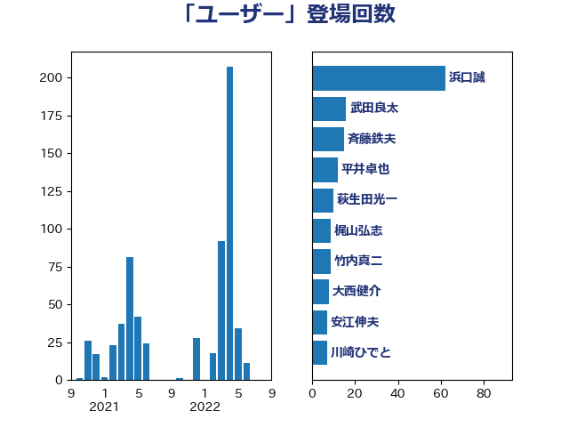

単語「ユーザー」

| 浜口誠 | 国民民主党 | 62 回 |
| 武田良太 | 自由民主党 | 16 回 |
| 斉藤鉄夫 | 公明党 | 15 回 |
| 平井卓也 | 自由民主党 | 12 回 |
| 萩生田光一 | 自由民主党 | 10 回 |
| 梶山弘志 | 自由民主党 | 9 回 |
| 竹内真二 | 公明党 | 9 回 |
| 大西健介 | 立憲民主党 | 8 回 |
| 安江伸夫 | 公明党 | 7 回 |
| 川崎ひでと | 自由民主党 | 7 回 |
| 平木大作 | 公明党 | 7 回 |
| 長浜博行 | 無所属 | 7 回 |
| 小沼巧 | 立憲民主党 | 6 回 |
| 牧島かれん | 自由民主党 | 6 回 |
| 礒崎哲史 | 国民民主党 | 6 回 |
| 大塚耕平 | 国民民主党 | 5 回 |
| 小泉進次郎 | 自由民主党 | 5 回 |
| 木村英子 | れいわ新選組 | 5 回 |
| 高木啓 | 自由民主党 | 5 回 |
| 佐藤啓 | 自由民主党 | 4 回 |
| 室井邦彦 | 日本維新の会 | 4 回 |
| 宮本徹 | 日本共産党 | 4 回 |
| 岩渕友 | 日本共産党 | 4 回 |
| 横沢高徳 | 立憲民主党 | 4 回 |
| 田村智子 | 日本共産党 | 4 回 |
| 矢倉克夫 | 公明党 | 4 回 |
| 石井章 | 日本維新の会 | 4 回 |
| 鈴木俊一 | 自由民主党 | 4 回 |
| 長峯誠 | 自由民主党 | 4 回 |
| 中西祐介 | 自由民主党 | 3 回 |
| 城井崇 | 立憲民主党 | 3 回 |
| 大野泰正 | 自由民主党 | 3 回 |
| 小林鷹之 | 自由民主党 | 3 回 |
| 小野泰輔 | 日本維新の会 | 3 回 |
| 川田龍平 | 立憲民主党 | 3 回 |
| 後藤祐一 | 立憲民主党 | 3 回 |
| 杉本和巳 | 日本維新の会 | 3 回 |
| 渡辺猛之 | 自由民主党 | 3 回 |
| 熊谷裕人 | 立憲民主党 | 3 回 |
| 笠井亮 | 日本共産党 | 3 回 |
| 上川陽子 | 自由民主党 | 2 回 |
| 古賀之士 | 立憲民主党 | 2 回 |
| 古賀友一郎 | 自由民主党 | 2 回 |
| 国光あやの | 自由民主党 | 2 回 |
| 大家敏志 | 自由民主党 | 2 回 |
| 大島敦 | 立憲民主党 | 2 回 |
| 岸田文雄 | 自由民主党 | 2 回 |
| 平将明 | 自由民主党 | 2 回 |
| 杉久武 | 公明党 | 2 回 |
| 柿沢未途 | 無所属 | 2 回 |
| 浜田聡 | NHK党 | 2 回 |
| 玉木雄一郎 | 国民民主党 | 2 回 |
| 田中健 | 国民民主党 | 2 回 |
| 田村貴昭 | 日本共産党 | 2 回 |
| 神田憲次 | 自由民主党 | 2 回 |
| 舩後靖彦 | れいわ新選組 | 2 回 |
| 西村康稔 | 自由民主党 | 2 回 |
| 青山周平 | 自由民主党 | 2 回 |
| 須藤元気 | 無所属 | 2 回 |
| 高橋英明 | 日本維新の会 | 2 回 |
| ながえ孝子 | 無所属 | 1 回 |
| 上田清司 | 国民民主党 | 1 回 |
| 中野洋昌 | 公明党 | 1 回 |
| 井上英孝 | 日本維新の会 | 1 回 |
| 仁木博文 | 無所属 | 1 回 |
| 伊藤孝恵 | 国民民主党 | 1 回 |
| 伊藤孝江 | 公明党 | 1 回 |
| 伊藤岳 | 日本共産党 | 1 回 |
| 加藤鮎子 | 自由民主党 | 1 回 |
| 北村経夫 | 自由民主党 | 1 回 |
| 吉田統彦 | 立憲民主党 | 1 回 |
| 守島正 | 日本維新の会 | 1 回 |
| 宮本周司 | 自由民主党 | 1 回 |
| 宮本岳志 | 日本共産党 | 1 回 |
| 山崎誠 | 立憲民主党 | 1 回 |
| 山本博司 | 公明党 | 1 回 |
| 山本左近 | 自由民主党 | 1 回 |
| 山添拓 | 日本共産党 | 1 回 |
| 山田太郎 | 自由民主党 | 1 回 |
| 山谷えり子 | 自由民主党 | 1 回 |
| 徳永エリ | 立憲民主党 | 1 回 |
| 志位和夫 | 日本共産党 | 1 回 |
| 打越さく良 | 立憲民主党 | 1 回 |
| 斎藤アレックス | 国民民主党 | 1 回 |
| 林芳正 | 自由民主党 | 1 回 |
| 柳ヶ瀬裕文 | 日本維新の会 | 1 回 |
| 森山浩行 | 立憲民主党 | 1 回 |
| 森本真治 | 立憲民主党 | 1 回 |
| 森田俊和 | 立憲民主党 | 1 回 |
| 櫻井周 | 立憲民主党 | 1 回 |
| 江島潔 | 自由民主党 | 1 回 |
| 泉健太 | 立憲民主党 | 1 回 |
| 浅野哲 | 国民民主党 | 1 回 |
| 浜地雅一 | 公明党 | 1 回 |
| 田島麻衣子 | 立憲民主党 | 1 回 |
| 田村憲久 | 自由民主党 | 1 回 |
| 畦元将吾 | 自由民主党 | 1 回 |
| 福島伸享 | 無所属 | 1 回 |
| 秋野公造 | 公明党 | 1 回 |
| 若松謙維 | 公明党 | 1 回 |
| 藤川政人 | 自由民主党 | 1 回 |
| 赤木正幸 | 日本維新の会 | 1 回 |
| 赤羽一嘉 | 公明党 | 1 回 |
| 里見隆治 | 公明党 | 1 回 |
| 金子恭之 | 自由民主党 | 1 回 |
| 鈴木義弘 | 国民民主党 | 1 回 |
| 鎌田さゆり | 立憲民主党 | 1 回 |
| 長友慎治 | 国民民主党 | 1 回 |
| 階猛 | 立憲民主党 | 1 回 |
| 音喜多駿 | 日本維新の会 | 1 回 |